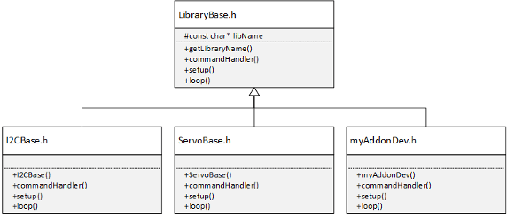

Create and Configure C++ Header File
The C++ header requires several properties and methods that must be overridden from the base class:
Note
Use only ASCII characters for file include path, C++ class name, and variables.
Install Third-Party Libraries
If you have third-party Arduino® libraries for your Arduino hardware follow these steps to install the libraries.
Find the location where you need to install the libraries by running the following command in the MATLAB® Command window.
CLIPath = arduinoio.CLIRoot
On your host terminal, change directory to the CLI path obtained from the above function call.
Then install the libraries at the above location by running the following command on your host terminal. Replace
<LIBRARY_NAME>with the name of the library that you want to install.For Windows®
If you are using the Terminal app:
arduino-cli.exe lib install "<LIBRARY_NAME>" --config-file arduino-cli.yaml
If you are using the Windows PowerShell:
./arduino-cli lib install "<LIBRARY_NAME>" --config-file arduino-cli.yaml
For Mac with Intel® or Apple Silicon Processor and Linux®
./arduino-cli lib install "<LIBRARY_NAME>" --config-file arduino-cli.yaml
LibraryBase
The LibraryBase class provides all the necessary
functionality for executing the code from the Create and Configure MATLAB Add-On Class. At the beginning of the file C++ header file, you
must include the LibraryBase.h library:
#include "LibraryBase.h"
You can include additional libraries following LibraryBase.h.
Typically, these libraries are third-party Arduino libraries for your Arduino hardware that provide direct access to specific functionality.
Your base add-on class C++ header must extend the LibraryBase class:
class MyAddon : public LibraryBase {
...
};Note
If you have included additional third-party libraries, make sure the name of
your add-on class (e.g. MyAddon) is not the same as the name
of any of the classes defined in the third-party libraries.
Extending the LibraryBase.h class provides access to the
appropriate methods and properties. The following diagram shows the typical method
inheritance for an add-on:

Constructor
The add-on constructor defines the name of your add-on library and registers the
library with the main Arduino program. Your add-on class must override the default constructor
method of the LibraryBase. The constructor uses the same
name as your add-on class and takes a reference to a
MWArduinoClass object.
public:
MyAddon(MWArduinoClass& a)
{
libName = "MyAddonPackageFolder/MyAddon";
a.registerLibrary(this);
}
The library name property, libName, must be the same string
defined in the Library Specification of the Create and Configure MATLAB Add-On Class:
<AddonFolderName>/<AddonName>
The add-on library is registered with the general
MWArduinoClass object using the
registerLibrary method. For example, the constructor from the
Create HelloWorld Add-On example uses the following constructor:
public:
HelloWorld(MWArduinoClass& a)
{
libName = "ExampleAddon/HelloWorld";
a.registerLibrary(this);
}
Command Handler
The commandHandler method is the entry point for the commands
executed in your Create and Configure MATLAB Add-On Class that were executed by the
sendCommand. Your add-on class
must override the default commandHandler method of the LibraryBase class.
public:
void commandHandler(byte cmdID, byte* dataIn, unsigned int payloadSize)
{
switch (cmdID){
case 0x01:{
…
sendResponseMsg(cmdID, val, 13);
break;
}
… // Other cases with appropriate cmdIDs
default:{
// Do nothing
}
}
}
The switch statement uses the command identifiers, cmdID, to
determine the segment of code to execute. The cmdIDs must match
those defined in the Create and Configure MATLAB Add-On Class. At the end of each switch
statement, the commandHandler must call the
sendResponseMsg function:
sendResponseMsg(byte commandID, byte* dataOut, unsigned int payloadSize)
The data assigned to the input arguments dataOut, and
payloadSize returned to the output arguments of the sendCommand function.
Note
Execution of the sendCommand called within the
Create and Configure MATLAB Add-On Class held until either a
sendResponseMsg executes or the
timeout condition is reached.
The commandHandler method from the Create HelloWorld Add-On example shows how a string, 'Hello
World!', can be created in the C++ code and returned to the Create and Configure MATLAB Add-On Class through the
commandHandler:
public:
void commandHandler(byte cmdID, byte* dataIn, unsigned int payloadSize)
{
switch (cmdID){
case 0x01:{
byte val [13] = "Hello World!";
sendResponseMsg(cmdID, val, 13);
break;
}
default:{
// Do nothing
}
}
}
Setup
The setup method can be used to initialize and set the initial
values. Your add-on class can override the default setup method
of the LibraryBase class to initialize variables. The Create LCD Add-on example overrides the default
setup method to reset the cursor to the first row upon
initialization as shown:
public:
void setup()
{
cursorRow=0;
}Loop
The loop method can be used to perform certain repetitive
tasks. Your add-on class can override the default loop method of
the LibraryBase class. In the example below, if
mcused is true, the controller remains on.
void loop()
{
if(mcused)
{
controllerMW.ping();
}
}Note
Do not use any blocking operation in the loop
method.
Debugging
The LibraryBase also provides a convenient function,
debugPrint, to display messages to the MATLAB command line to help in development of your add-on.
The debugPrint function uses the same syntax as the C++
printf function:
debugPrint(MSG_EXAMPLE_DEBUG);
The debug message must be declared in the C++ header file using the following syntax:
const char MSG_EXAMPLE_DEBUG[] PROGMEM = "This is a debug message.\n";
where the string PROGMEM is the message displayed. Additional
information can be included in the debug message using format specifiers. To enable
debugPrint messages to be displayed to the MATLAB command line during run-time, you must set the additional Name-Value
property ‘trace’ in the arduino function:
The Create HelloWorld Add-On example prints to the MATLAB command line a sample debug message with the last
commandID that was included using a format specifier:
const char MSG_EXAMPLE_DEBUG[] PROGMEM = "Example debug message: cmdID %d\n"; ... debugPrint(MSG_EXAMPLE_DEBUG, cmdID);
See Also
Create Add-On Package Folder | Create and Configure MATLAB Add-On Class